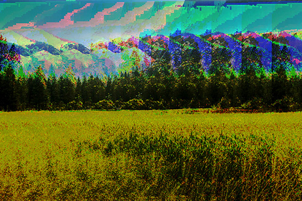
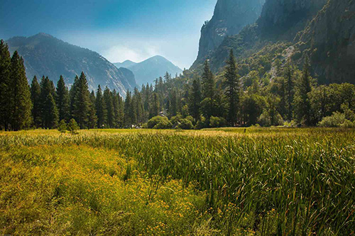
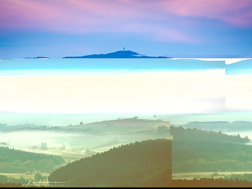
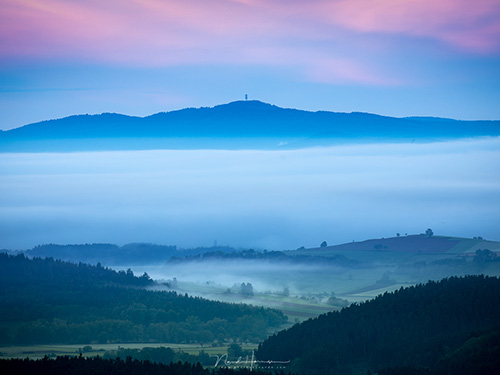
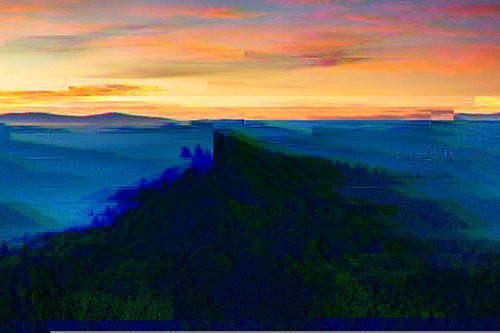

This is my glitch art series. I chose to glitch mountains because I find them to be majestic landforms. I also find it almost poetic how mountains and other landforms are created and built upon through chance, similarly to glitches, but with a reason behind the creation.
Glitched with Audacity


Glitched with Notepad++


Glitched with Photoshop and Notepad++
